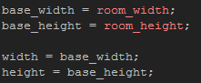
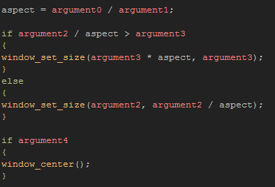
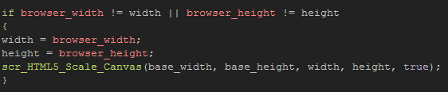
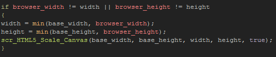

Tutorial
Page 6 of 15
HTML5 Scaling
HTML5 (and Windows 8 (JS)) games can also be scaled to fit the browser width and height using largely the same functions, although the window is now the canvas element of the page, and the display
becomes the browser width and height. As with the Windows examples, we will start by scaling the full room then move on to using views.
Scaling the game canvas to the browser is actually very simple and can be done with a single short script. The only complication is that the browser can be taller than it is wider (unlike the average desktop PC display)
and this possibility has to be taken into account.
To start with you will need to move the HTML5 rooms to the top of the room assets list so that when we run the game we start with them, and then you should open up the object called
obj_HTML5_Scaling. Add a Create Event and in that place the following:

You should be familiar with the base width and height variables by now, but we also need two extra variables that will be used to detect when the browser width changes. We initialise these to the size of the
game room as the script you will add next will then set them to the correct size for the current browser state.
So now add a new script asset and call it scr_HTML5_Scale_Canvas, then add this code:

Here we check to see if the new current width, when scaled proportionally by the aspect ratio, is greater than the current height, and if it is, we set the game canvas to the current height and then set
the width to be a proportion of that. However if the new width when scaled by the aspect ratio is less than the current height, the game canvas is scaled to the new width and the height proportionally to
that.
You will note too that there is a final section here to center the game window or not. This is optional, and it's only included here to show that it is possible to position the canvas within the browser using this
function (the other windows position functions will work too). You should be aware however that these functions will do nothing on the Windows 8 (JS) target.
To use our script, you will need to add a Step Event to the controller object and add the following:

This code will check to see if the browser has changed size and then run the script we have created to scale the canvas should it be necessary. If you do not wish the canvas to scale to the full size of the browser,
but would rather have it only scale to the maximum size of the game room, you can make a small change to the Step Event code like this:

You could even use the median() function instead of the min function to set a minimum and maximum scale for the game canvas. Play around with different values here in
this object and for the room size, then test the game while dragging the browser edges to different sizes to see how all this fits together.
NOTE: This object will work perfectly fine on the Windows 8 (JS) target platform to scale the canvas, however, instead of using the Step Event to control scaling, you should simply call it
from the special Resize sub-event that you can find in the Draw event of the object. This will be triggered whenever the game window is "snapped" in the Windows 8 interface.
Click on the Next button to go to the next page of the tutorial.